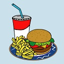
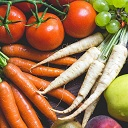
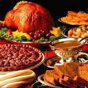
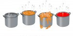
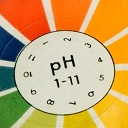

INFORMACJE
Zalecenia żywieniowe w niedoczynności tarczycy
- Źródło białka - chude gatunki mięs (kurczak, indyk, królik, chuda wołowina) oraz niskotłuszczowe mleko i przetwory mleczne.
- Ryby - dostarczające dodatkowo jod, selen i witaminą D oraz wielonienasycone kwasy tłuszczowe - zaleca się spożywać 3 - 4x w tygodniu.
- We współistniejącej chorobie Hashimoto ryby należy spożywać 1x w tygodniu ze względu na zawartość jodu.
- Rośliny strączkowe (grochy, soczewica, fasola, ciecierzyca) do 3x w tygodniu. W przypadku kiedy TSH nie jest wyrównane należy je wyeliminować z diety do czasu ustabilizowania jego poziomu.
- Tłuszcze - 20 - 35% wartości energetycznej diety - głównie pochodzenia roślinnego (olej, orzechy, nasiona), bardzo ważna jest podaż wielonienasyconych kwasów tłuszczowych omega-3, które pobudzają wątrobę do przemiany T4 do T3 zwiększając metabolizm ustroju oraz wrażliwość komórek na hormony tarczycy.
- Węglowodany złożone - 50 - 70% wartości energetycznej diety. Często niedoczynności towarzyszy insulinooporność, stąd zalecane są produkty o niskim indeksie glikemicznym.
- Źródło błonnika - 20 - 40g na dobę, pełnoziarniste produkty zbożowe, surowe i gotowane na parze warzywa oraz świeże i suszone owoce. Największa ilość błonnika znajduje się w otrębach, płatkach naturalnych, pieczywie pełnoziarnistym, roślinach strączkowych (fasola, bób), owocach suszonych, orzechach i nasionach oraz warzywach.
- Należy ograniczyć podawanie do 3x w tygodniu roślin strączkowych i krzyżowych takich jak: kapusta, brukselka, jarmuż, brokuł ze względu na wysoką zawartość tiocyjanów ograniczających wchłanianie i wpływających na metabolizm jodu. Najlepiej jeść je w postaci gotowanej i kiszonej.
- Stała ilość błonnika w pierwszym posiłku - śniadaniu po przyjęciu leków.
- Płyny - należy wybierać wody o niskiej zawartość sodu (od 5 do 20 mg l ), o wysokiej koncentracji jodu (nie są zalecane w Hashimoto), selenu, magnezu i cynku.
- Aktywność fizyczna - co najmniej 3x w tygodniu przez 30 minut. Szczególnie zaleca się uprawianie sportów aerobowych w godzinach porannych (bieg, basen, rower, marsz) oraz unikanie ćwiczeń które zmuszają do krótkiego, ale intensywnego wysiłku.
- Niedoczynność tarczycy - należy rozważyć ocenę występowania nietolerancji glutenu i laktozy.
 Co przyczynia się do rozwoju otyłości i nadwagi u Twojego dziecka
- Nadmiar tłuszczów nasyconych (pochodzących głównie z tłustego mięsa)
- Spożywanie wyrobów zawierających toksyczne tłuszcze trans (m.in. batony, ciastka, produkty wytworzone z margaryn twardych)
- Nadmiar kwasów omega 6 w stosunku do omega 3. Właściwa proporcja to 2:1 (tzn. na 2 gramy kwasów omega 6 powinien przypadać 1 gram kwasów omega 3)
- Nadmiar cukrów prostych i soli
- Brak aktywności fizycznej
- Niedobór witamin, zwłaszcza antyoksydacyjnych (A, C, E) oraz z grupy B
- Niedobór błonnika pokarmowego
 Jak zachęcić dzieci do jedzenia warzyw?
Z jedzeniem warzyw jest jak z wychowaniem dzieci - trzeba być wytrwałym, konsekwentnym i cierpliwym!
- Wspólne przygotowywanie potraw
- Wspólne zakupy w warzywniaku
- Opowiedz dziecku o tym gdzie rosną poszczególne warzywa, z czego jest chleb
- Warzywa to nie tylko sałatka, ale też ciasto marchewkowe
- Zacznij od dań prostych i najbardziej ulubionych przez dziecko
- Podawaj warzywa z ulubionym sosem, bułką
- Uważaj w doborze kolorów, nie mieszaj buraczków z ziemniakami
- Zainwestuj w sokowirówkę, róbcie razem soki
- Podawaj warzywa do każdego posiłku
- Przygotuj z dzieckiem postaci z warzyw
- Obierz i pokrój warzywa i podsuwaj dziecku jako przekąskę
Najważniejsze - rodzice też muszą jeść warzywa.
5 zasad zdrowego odżywiania dzieci i młodzieży
- Jedzenie śniadania
- Jedzenie o regularnych porach
- Jedzenie warzyw i owoców
- Picie codziennie odpowiedniej ilości wody (bez cukru)
- Unikanie cukru, słodyczy i słodkich napojów
Według Światowej Organizacji Zdrowia (WHO) w roku 2014 nadmierna masa ciała wśród Polaków występowała u 68,2% mężczyzn
i 60,5% kobiet, a otyłych mężczyzn było 24,8% i otyłych kobiet 29.1% (WHO 2014).
Należy pamiętać, że otyłe dziecko to otyły dorosły i nie możemy się łudzić, że nasze pociechy wyrosną z otyłości.
Dlaczego warto dbać o prawidłową masę ciała dzieci?
Otyłość jest chorobą i jak donoszą najnowsze badania otyłe dziewczynki gdy dorosną są narażone na zachorowanie na cukrzycę typu 2, natomiast chłopcy na nadciśnienie tętnicze.
Czy należy zwracać uwagę na jakość jedzenia dziecka kiedy jest szczupłe?
W prospektywnej obserwacji 14- i 17- letnich uczniów wykazano, że nawet umiarkowane spożywanie napojów słodzonych, to jest mniej niż 1,3 szklanki dziennie zwiększało ryzyko rozwoju chorób sercowo-naczyniowych u dziewcząt i chłopców, niezależnie od ich masy ciała [1]. Z kolei analiza diet 4- 9- i 13- letnich dzieci wykazała negatywny związek między spożyciem cukru dodanego do żywności a spożyciem mikroskładników oraz miedzy spożyciem warzyw i owoców [2]. Diety obserwowanych raz w roku dzieci, od 13-go miesiąca do 9-go roku życia, spożywających mało cukru, były obfitsze w produkty zbożowe, mleczne i warzywa w porównaniu do dzieci spożywających dużo cukru [3]. Z tej obserwacji mamy jasną wskazówkę jak spowodować, aby nasze dziecko jadło warzywa - ograniczyć cukier!
Możemy na podstawie wyżej opisanych badań wnioskować, że gdy nasze dziecko jest szczupłe nie zwalnia nas to z obowiązku dbania o zasady zdrowego żywienia, gdyż w innym przypadku narażamy nasze pociechy na choroby w wieku dorosłym.
Opracowanie: Dietetyk, psychodietetyk Gabriela Nowakowska
Piśmiennictwo
- Frary C.D. , Johnson R.K. Wang M.Q. "Children and adolescent choice of food and beverages high in addend sugars are associate with intakes of key nutrients and food groups." 2004, 34, 56-63
- Qverby N.C. Lillegaaed I.T. Johansson L., Anderson L. F. "High intake of added sugar among Norvegian children and adolescents." Publ. High Nutr. 2003, 7, 285-293
- Ruottinen S., Niinkoski H., Lagstrum H., et.al. "High sucrose intake is associate with poor quality diet and growth between 13 months and 9 years of age: The Special Turk Coronary Risk Factor Intervention Project". Pediatrics, 2008, 121, 1676-1685
 Dlaczego jemy więcej niż byśmy chcieli?
Przy różnych okazjach zasiadamy przy suto zastawionym stole.
Czy zastanowiliśmy się nad tym: co powoduje, że sięgamy po kolejny przysmak, nawet wówczas, gdy nie jesteśmy już głodni?
Od czego zależy ile zjemy?
Preferencje pokarmowe kształtowane są od początku naszego życia. Nasze zdolności odczuwania smaku to szereg czynników fizjologicznych miedzy innymi: zdolność odczuwania smaku, czyli próg odczuwania smaku (niski lub wysoki), adaptacja sensoryczna, czy zjawisko sytości sensorycznie specyficznej. Szereg czynników od uwarunkowań genetycznych przez płeć, wiek i kondycję fizyczną ma niewątpliwie wpływ na nasze wybory pokarmu.
Smakowitość produktów żywnościowych jest kompleksowym zjawiskiem w tworzeniu, którego biorą udział zmysły węchu i smaku, czyli zmysły chemiczne. Za pośrednictwem tych zmysłów odbierane są wrażenia drażniące jak pieczenie (pod wpływem ostrych przypraw) „szczypanie” (np. pod wpływem napojów gazowanych), lub chłodzenie (np. pod wpływem mentolu).
Znaczący jest także wpływ środowiska, w którym przebywamy, ponieważ całe życie jesteśmy poddawani tzw. treningowi sensorycznemu, czyli nauce nowych smaków i odczuć sensorycznych nasze preferencje pokarmowe rozwijają się i nie są stałe. Nakłada się na to aspekt emocjonalny i kondycja psychiczna. W zależności od naszego nastroju sięgamy po produkty o różnej smakowitości. Występuje także zależność odwrotna człowiek głodny jest bardziej pobudzony i ma wyostrzone zmysły. Po zjedzeniu posiłku emocje opadają, i jesteśmy często apatyczni, senni, mamy większe szanse na pozytywne niż negatywne emocje.
Emocjonalne reakcje na bodźce pochodzące z żywności mogą mieć charakter wrodzony lub nabyty. Uważa się, że odczuwanie smaku słodkiego jako przyjemny, a smaku gorzkiego jako nieprzyjemny ma charakter wrodzony.
Wiedza na temat wpływu wrażeń sensorycznych na wybór pokarmu pozwala na modyfikację i naukę prawidłowych nawyków żywieniowych, co z kolei może być pomocne w prewencji i leczeniu otyłości.
Ale czy faktyczne jesteśmy w stanie zapanować nad ilością zjadanych pokarmów mając tą wiedzę?
Ilość zjadanego pokarmu zależy od tego co dzieje się w naszym otoczeniu. Gdy jemy w sposób nieświadomy szukamy wskazówek, które „powiedzą” nam czy już jesteśmy najedzeni. Jednak zazwyczaj jest tak, że jak jest dużo na stole to zjadamy więcej.
Oprócz wiedzy na temat naszych preferencji pokarmowych, powinniśmy mieć na uwadze, iż na przykład im większe opakowania, tym zużywamy więcej jego zawartości niezależnie od rodzaju produktu. Korzystając z dużych opakowań przygotowujemy posiłek zawierający o 150 kcal więcej niż gdy używamy „normalnego” opakowania, co powoduje, że zjadamy średnio o 20 – 25% więcej.
Dla sprawdzenia tej zależności przeprowadzono badanie „popcorn i słaba wola”. Osoby badane były uczestnikami seansu filmowego, które otrzymywały gratisowy popcorn w pudełkach różniących się wielkością. Każdy z uczestników seansu był następnie zapytany czy zjadł za dużo popcornu. Osoby, które otrzymały popcorn w dużych pudełkach zjadły podczas seansu o 53% więcej popcornu niż ci, którzy dostali popcorn w mniejszych pudełkach. Dodatkowo ci, którzy zjedli popcorn w dużych pudełkach w ogóle tego nie zauważyli.
Badanie „draże M&M’s” przeprowadzone podczas zebrania rodzicielskiego gdzie rodzice otrzymali paczki M&M’sów różniących się wielkością i byli proszeni o wyrażenie opinii na temat prezentowanego filmu. Wynik badania: osoby, które otrzymały draże w większych paczkach zjadły podczas oglądania filmu średnio 137 cukierków; te które dostały mniejsze paczki skonsumowały w tym samym czasie średnio 71 cukierków.
Kolejne badanie dowodzi, że trudno jest nam oszacować ilość jedzenia. Badanie „bezdenny talerz” przeprowadzono podczas jedzenia zupy. Uczestnicy badania sadzani byli przy czteroosobowych stolikach, na których znajdowały się dwa talerze „normalne” i dwa talerze „bez dna”. Czas trwania badania: 20 minut. Po zakończeniu badania uczestnikom zadano pytanie: czy czujesz się najedzony? Osoby, które jadły z talerzy „bez dna”, skonsumowały o 73% więcej zupy w porównaniu z jedzącymi z „normalnych” talerzy.

Złudzenia optyczne a konsumpcja.
Oprócz trudności w kontrolowaniu ilości jedzenia wynikających z braku uważności i koncentracji, czyhają na nas pułapki zastawione przez nas samych, a dokładniej przez nasz mózg.
Z powodu złudzenia „pion-poziom” z niskiej i pękatej szklanki wypijamy 25 – 30% więcej niż z wysokiej i smukłej. Badania przeprowadzone na obozie fitness dla nastolatków. W wysokich i cienkich szklankach wypijali oni średnio ok. 190 ml napojów, w niskich, pękatych – 330 ml. Złudzeniu pion-poziom nie tylko ulegają niedoświadczone osoby, ale również takie, które, na co dzień w pracy odmierzają ilości płynów np. doświadczeni barmani. Ci, którzy dostali wysokie i wąskie kieliszki prawie idealnie trafiali z ilością alkoholu, pozostali (niska, pękata szklanka) dodawali średnio o 45% za dużo alkoholu do każdego drinka.
Ta sama porcja mięsa nałożona na większy i mniejszy talerz wydaje się mniejsza na talerzu o większych rozmiarach – to efekt kontrastu.
Przykładowe badania: lodowa uczta (osoby badane: specjaliści ds. żywienia) ci którzy dostali większe puchary [120 ml] nakładali sobie wielkie, o 31% większe porcje w porównaniu z tymi którzy otrzymali mniejsze puchary [600 ml] ci którzy dostali większe puchary i posługiwali się większymi łyżkami serwowali sobie porcje o 57% większe niż jedzący w mniejszych pucharach, mniejszymi łyżkami.
Przejadamy się jeśli nie widzimy ile zjedliśmy – dowodzi temu badanie zatytułowane „zapomniane kęsy”. Osoby badane to studenci zaproszeni na oglądanie meczu do pubu. Badani mogli zjeść dowolną ilość darmowych skrzydełek z kurczaka, przy czym z jednych stołów sprzątano podczas meczu odpadki a z innych nie. Co się okazało?
Uczestnicy badania, którym stale usuwano ze stołów resztki zjedli średnio o 28% więcej niż siedzący przy „brudnych stołach”.
przykłady badań na podstawie: Wansink, B. [2010] Beztroskie jedzenie. Dlaczego jemy więcej niż byśmy chcieli? Pruszków: MiND B. efekt kontrastu
Opracowanie: Dietetyk, psychodietetyk Gabriela Nowakowska
 Równowaga kwasowo-zasadowa
Równowaga kwasowo-zasadowa to stan, w którym zachowany jest swoisty stosunek kationów do anionów w płynach ustrojowych, warunkujący odpowiednie pH i prawidłowy przebieg procesów życiowych.
Regulacja wydalania CO2 przez płuca odbywa się w wyniku pobudzenia ośrodka oddechowego przy obniżeniu pH krwi, czego następstwem jest zwiększenie wentylacji płuc i usuniecie CO2.
Narządem decydującym ostatecznie o zmianach pH krwi są nerki.
Kwasica oddechowa to upośledzenie wydalania CO2 przez płuca.
Kwasica ustrojowa to nadmierne wytwarzanie lub niedostateczne wydalanie kwaśnych produktów przemiany materii.
Czym wywołane jest zakwaszenie organizmu?
- kwas powstaje podczas trawienia białek
- każdy proces energetyczny uwalnia CO2
- wszystkie czynniki psychologiczne takie jak stres, strach i smutek powodują silne zakwaszenie ustroju
- brak ruchu
- dodatkowo kwaśne związki mogą powstawać w wyniku długotrwałej fermentacji jelitowej (dysbioza)
W przemianach metabolicznych powstają związki, które mogą zakwaszać lub alkalizować środowisko.
Zakwaszające to: jony chlorkowe, fosforanowe i siarczanowe, oraz kwasy – fitynowy, szczawiowy, benzoesowy oraz nadmiar dwutlenku węgla powstały w wyniku przemiany białek, tłuszczów i węglowodanów.
Alkalizujące to: jony sodu, potasu, wapnia, magnezu i żelaza.
Żywność zakwaszająca:- cukier i słodycze zawierające cukier
- produkty z białej maki (chleb biały, tostowy, makarony, kluski)
- ryż biały polerowany
- słodkie napoje bezalkoholowe
- ziarna kawy
- napoje alkoholowe
- mięso i podroby (wątroba, serce, nerki)
- drób (kurczak, kaczka, gęś, indyk)
- dziczyzna
- jaja (tylko żółtko jest zasadowe)
- sery, twaróg
- rosół
- ziemniaki
- warzywa (z wyjątkiem cebuli)
- fasola
- owoce (z wyjątkiem borówki i żurawiny)
- surowe mleko i śmietana
- niegazowana woda mineralna
- aromatyczne zioła (pietruszka, szczypiorek, majeranek, tymianek, oregano, koper, gorczyca, kminek, pieprz, papryka)
- grzyby
- migdały, orzechy
- stałe zmęczenie (nie ustępujące po odpoczynku)
- ból głowy
- utrata apetytu
- apatia
- zaburzenia w przemianie materii
- gorsze wykorzystanie składników odżywczych z pożywienia
- schorzenia skóry
- sprzyja nadciśnieniu, cukrzycy i kamicy nerkowej
Opracowanie - Wieliczka, Poradnia Dietetyczna Goja
Dbaj o serce
Choroby serca i układu krążenia powodują najwięcej zgonów na świecie. Jak podaje Eurostat w Europie, 41% mieszkańców Starego Kontynentu umiera właśnie z powodu tych chorób. Światowe autorytety i najważniejsze międzynarodowe organizacje od lat próbują te liczby ograniczyć, choćby przez odpowiednią dietę.
Choroby takie jak miażdżyca, choroba wieńcowa, czy nadciśnienie tętnicze nie dają we wczesnych stadiach wyraźnych, ostrych objawów. Stąd są nazywane podstępnymi. Nie wykryte wcześnie, czy bagatelizowane prowadzą do zaawansowanych stadiów, w których leczenie jest kłopotliwe dla chorego i często wyłącza go z codziennego życia (hospitalizacja).
Dieta jest znaczącym składnikiem stylu życia w pierwotnym i wtórnym zapobieganiu chorób układu krążenia. Spośród najważniejszych składników diety „najzdrowszej dla serca” należy wymienić: kwas foliowy, którego źródłem są foliany w warzywach i owocach, a jego niedobory powodują ryzyko miażdżycy. Witamina D zawarta w produktach mlecznych i rybach, kwasy omega-3 pochodzące z tłuszczu ryb morskich, które posiadają właściwości przeciwzakrzepowe.
Również herbata, czekolada, wino bogate w flawonoidy i karotenoidy obniżają ryzyko chorób układu krążenia.
Sterole roślinne, których źródłem są oleje roślinne i rośliny strączkowe obniżają poziom cholesterolu.
Jedząc ryby jeden raz w tygodniu (zaleca się 2 razy w tygodniu) obniżamy o 52% ryzyko nagłej śmierci sercowej,
w porównaniu do osób spożywających ryby raz w miesiącu lub wcale.
Opracowanie: Dietetyk, psychodietetyk Gabriela Nowakowska